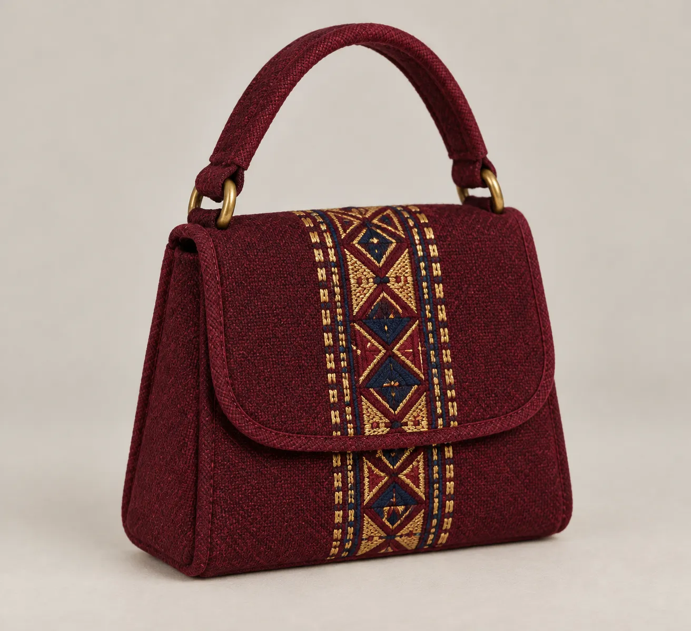

What makes pattu, pattu?
Inside Hunza's enduring frame-loom tradition.
Stories of material, memory and the people keeping highland craft in motion.
Inside Hunza's enduring frame-loom tradition.
Reading the geometric motifs of Balti textiles.
A practical guide to the iconic highland cap.

Follow the visual language of mountain craft through colour, rhythm and the patient hand.
Read our story